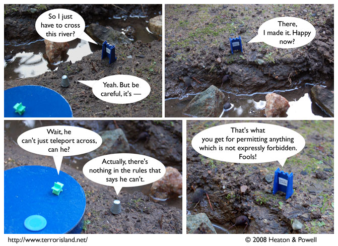

Strip #256
— Wednesday, January 30, 2008
And now the secret of Ned’s prison escape has been revealed!
Notes, Thoughts, &c.
Ben’s Notes
Hey, this strip number’s another power of 2! I don’t remember seeing one of those since at least a hundred strips ago.
Lewis’s Notes
Don’t be fooled by Ned’s pithy observation. The fact that there will occasionally be loopholes in one’s regulations which permit this sort of unforeseen outcome isn’t a good reason to forbid everything which is not expressly permitted. I mean, a better solution is just to change the rules so that in the future, any spatially discontinuous paths are disallowed.